Project Overview
This project implemented Neural Radiance Fields (NeRF) for new view synthesis by training neural networks to reconstruct 3D scenes from multi-view images. The implementation includes camera calibration, pose estimation, ray generation, volume rendering, and neural field optimization from scratch using PyTorch.
Part 0: Camera Calibration and 3D Scanning
0.1: Camera Calibration Pipeline
Camera calibration implementation using ArUco tags to compute intrinsic parameters and distortion coefficients:
- Take 30-50 images of calibration tags from different angles and distances
- Detected ArUco markers using OpenCV's detector with DICT_4X4_50 dictionary
- Extracted image coordinates and corresponding 3D world points
- Used cv2.calibrateCamera() to compute camera matrix and distortion coefficients
0.2: 3D Object Scanning
Captured a custom object (Guillotine) with 80 images from different viewpoints:
- Set the printed ArUco tag as world coordinate origin
- Used the same camera and zoom level as the calibration image camera
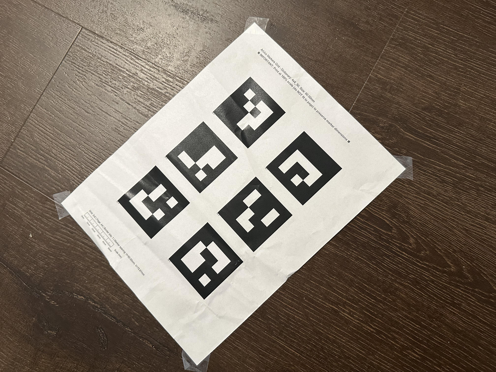
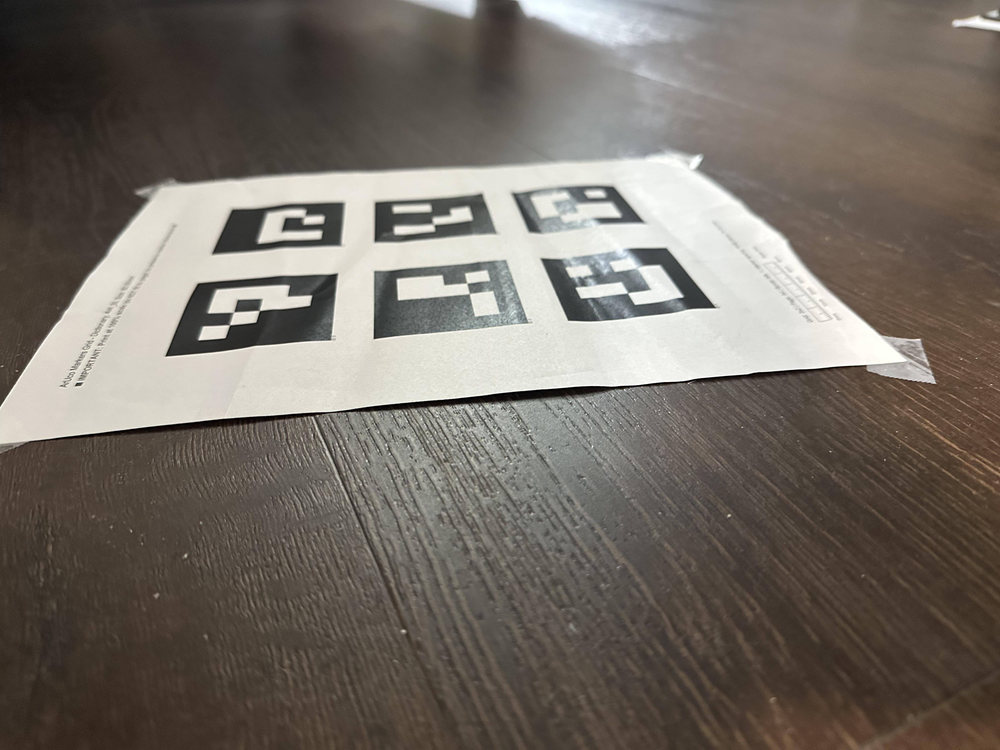
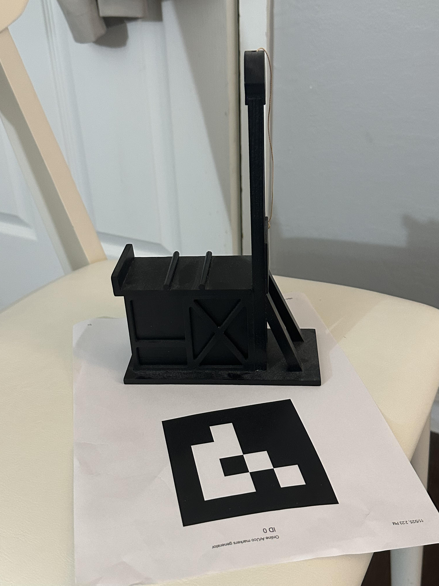
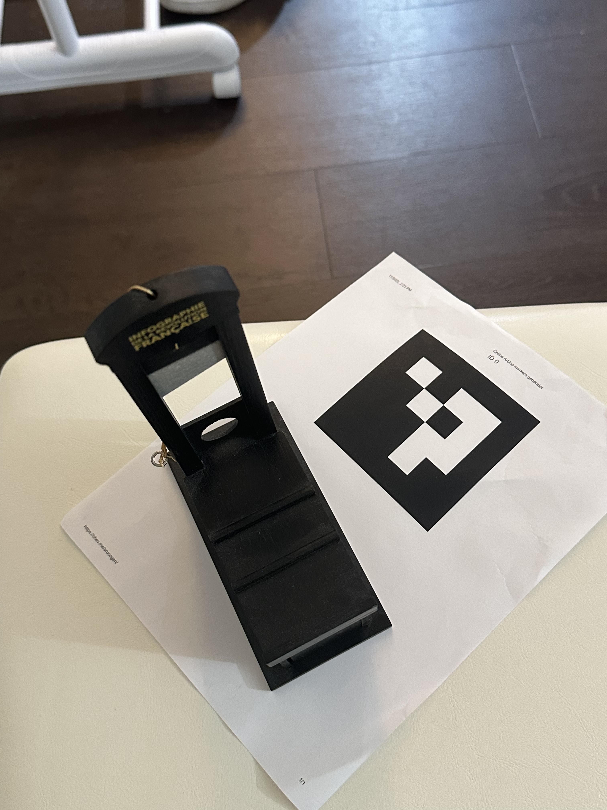
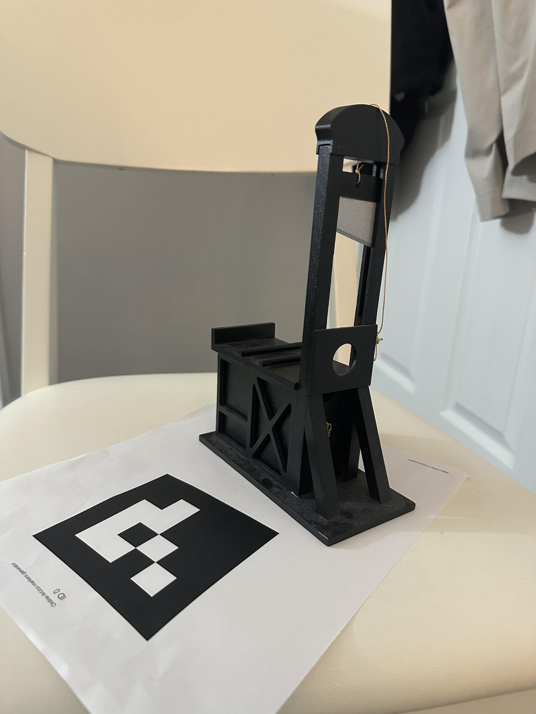
Camera Pose Estimation
Estimated camera extrinsics using Perspective-n-Point (PnP) solving:
# Detect ArUco markers
corners, ids, _ = aruco_detector.detectMarkers(gray)
# Solve Perspective-n-Point
ret = cv2.solvePnPGeneric(
marker_size_in_world, imgp, camera_matrix, dist_coeffs,
flags=cv2.SOLVEPNP_IPPE_SQUARE
)
# Convert to camera-to-world matrix
R, _ = cv2.Rodrigues(rvec)
c2w = np.linalg.inv(np.vstack([np.hstack([R, tvec]), [0, 0, 0, 1]]))
Camera Frustum Visualization
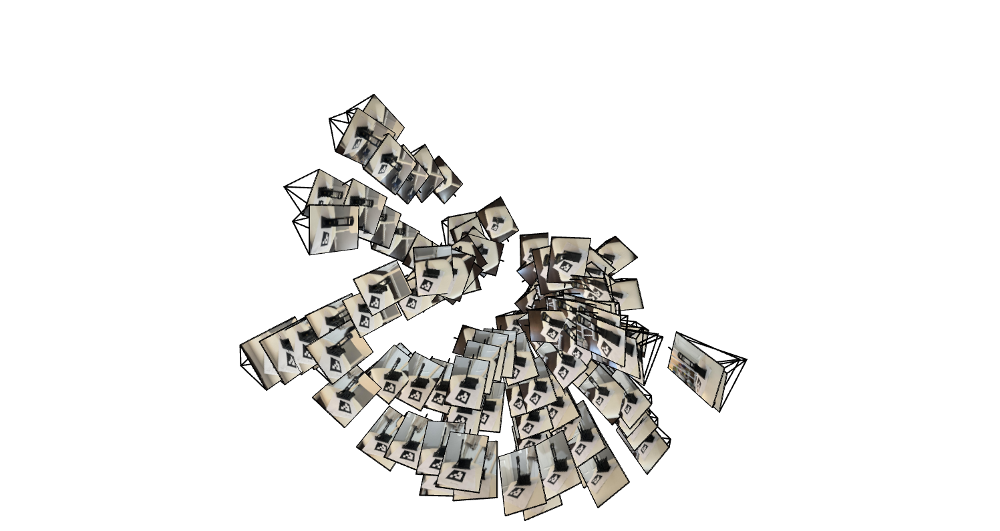
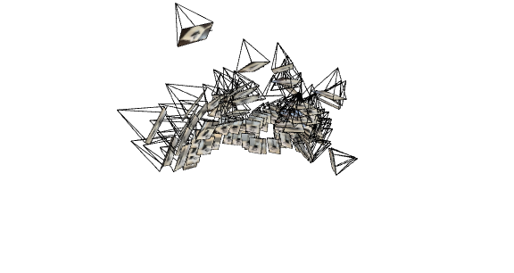
Dataset Preparation
Undistorted images and packaged dataset with train/val/test splits:
images_train=images_train, # (40, H, W, 3)
c2ws_train=c2ws_train, # (40, 4, 4)
images_val=images_val, # (5, H, W, 3)
c2ws_val=c2ws_val, # (5, 4, 4)
c2ws_test=c2ws_test, # (30, 4, 4)
focal=focal # 1380.5
)
Part 1: Fit a Neural Field to a 2D Image
Network Architecture
Implemented MLP with sinusoidal positional encoding for 2D image regression:

- Input: 2D coordinates (x, y) positional encoded to 26 dimensions
- Output: 3 channels (RGB) with Sigmoid
- Hidden layers: 4 layers, 256 neurons each
- Learning rate: 1e-2 with Adam optimizer
- Batch size: 10,000 pixels per batch
Positional Encoding Implementation
Sinusoidal encoding to map 2D coordinates to higher dimensions:
\[ \text{PE}(x) = \left\{ x, \sin(2^0 \pi x), \cos(2^0 \pi x), \sin(2^1 \pi x), \cos(2^1 \pi x), \ldots, \sin(2^{L-1} \pi x), \cos(2^{L-1} \pi x) \right\} \]
for i in range(L):
freq = 2**i * torch.pi
encoded.append(torch.sin(freq * x))
encoded.append(torch.cos(freq * x))
Encoding Dimensions
- Input dimension: \( d \)
- Output dimension: \( d \times (2L + 1) \)
- Frequency levels: \( L = 10 \) for 2D coordinates
encodings = [x]
for i in range(L):
for fn in [torch.sin, torch.cos]:
encodings.append(fn(2.0**i * x))
return torch.cat(encodings, dim=-1)
Uses Peak Signal-to-Noise Ratio (PSNR) for Quality Metric:
\[ \text{PSNR} = 10 \cdot \log_{10} \left( \frac{1}{\text{MSE}} \right) \]
Training Progression - Test Image
Parameters: 3000 iterations, 256 neurons, L=10
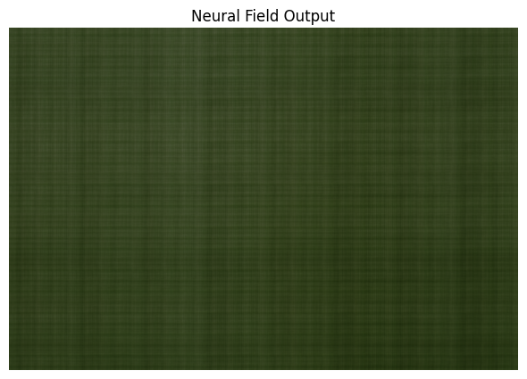
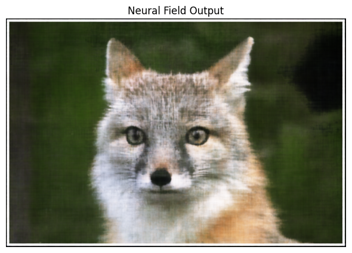
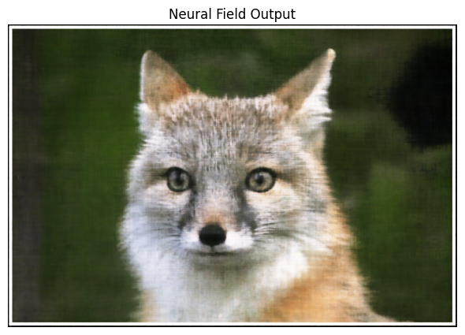
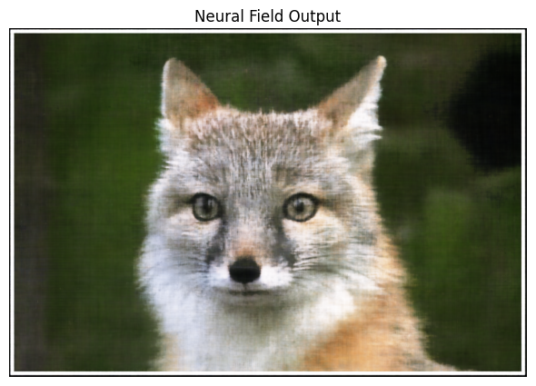
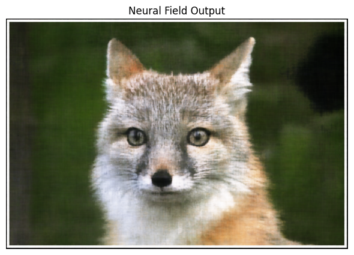
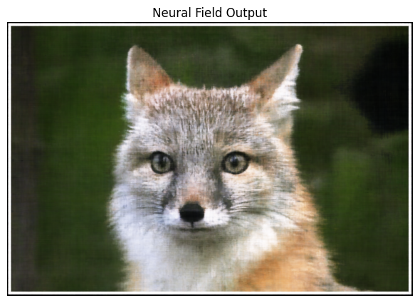
PSNR Training Curve for Test Image
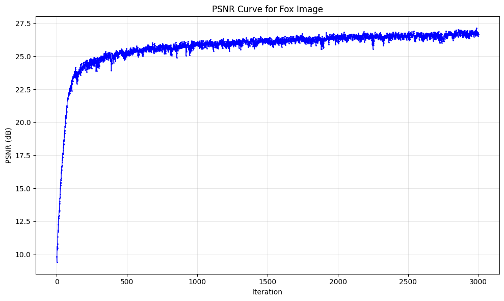
PSNR vs Iterations
Training Progression - Custom Image

Parameters: 3000 iterations, 256 neurons, L=10
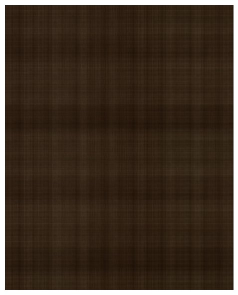
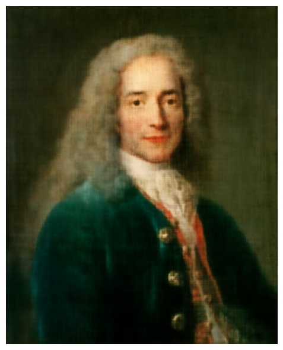
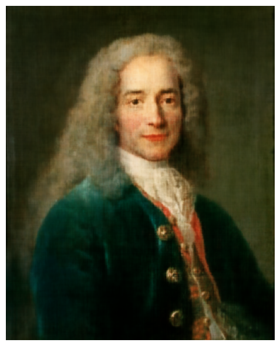
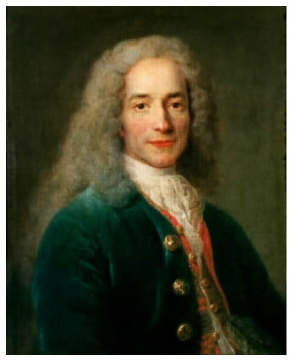
PSNR Training Curve for Custom Image
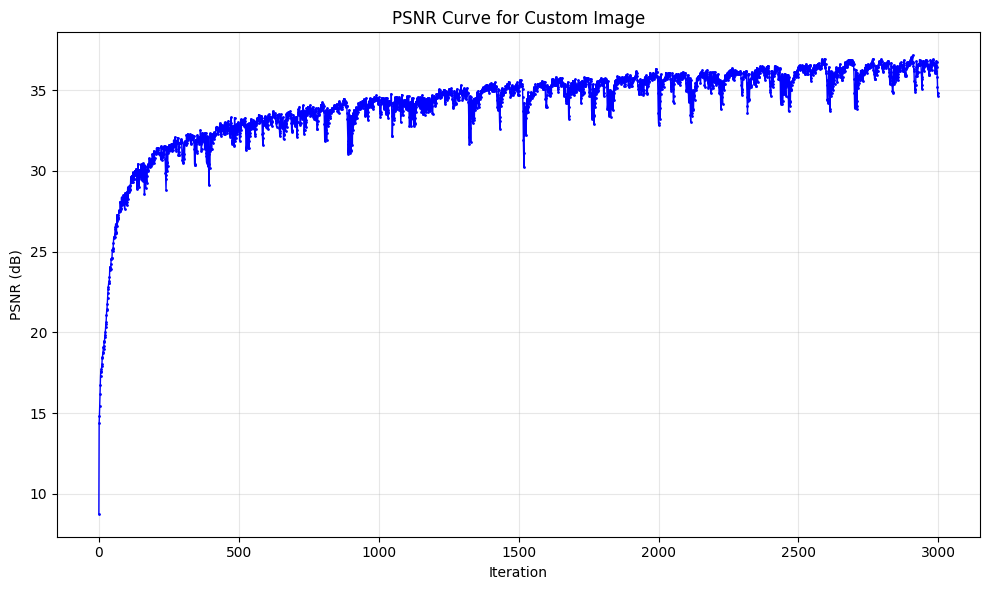
PSNR vs Iterations
Hyperparameter Analysis
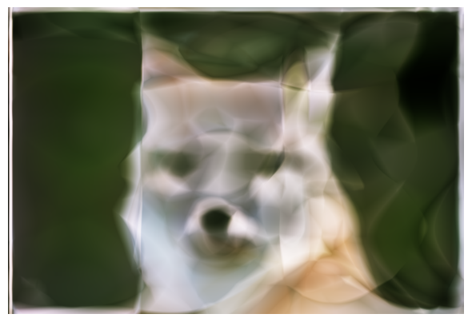
L=3, width=16
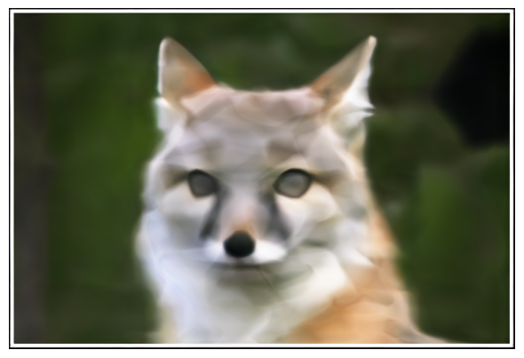
L=3, width=256
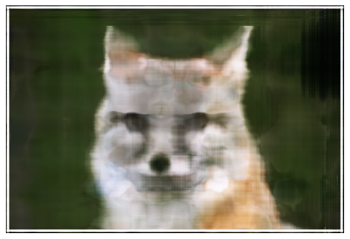
L=10, width=16
L=10, width=256




Part 2: Neural Radiance Field from Multi-view Images
Ray Generation Pipeline
Implemented coordinate transformations and ray sampling:
- Camera to World: Transform points using c2w matrix
- Pixel to Camera: Back-project using camera intrinsics
- Ray Construction: Origin at camera center, direction from pixel projection
- Ray Sampling: Random batch of 10,000 rays per iteration
2.1 Create Rays from Cameras Implementation Overview:
Camera to World Transformation
Function: x_w = transform(c2w, x_c)
Transforms point from camera to world coordinates:
$$x_w = R \cdot x_c + t$$
where R = c2w[:3,:3] (rotation matrix) and t = c2w[:3,3] (translation)
Pixel to Camera Coordinate Conversion
Function: x_c = pixel_to_camera(K, uv, s)
Inverts the projection process using camera intrinsic matrix K:
$$x_c = K^{-1} \cdot (s \cdot [uv, 1]^T)$$
where s is the depth along the optical axis
Pixel to Ray Generation
Function: ray_o, ray_d = pixel_to_ray(K, c2w, uv)
Computes ray origin and direction for each pixel:
$$ray_o = c2w[:3,3]$$
$$ray_d = \frac{x_w - ray_o}{||x_w - ray_o||}$$
2.2 Ray Sampling System
RaysData Class - Stochastic Ray Sampling
- Initialization: Precomputes ray origins and directions for all pixels across all images
- UV Grid: Uses meshgrid and adds 0.5 offset to center pixel coordinates
- Ray Generation: Calls
pixel_to_ray(K, c2w, uv)to compute rays per image - Sampling: Selects M random images, then samples
N // Mrays per image - Output: Returns sampled ray origins, directions, and pixel colors
uv = np.column_stack([batch_x + 0.5, batch_y + 0.5]) r_o, r_d = pixel_to_ray(self.K, c2w, uv) sample_along_rays Function - Ray Discretization
- Purpose: Converts each ray into
n_samples3D points along its path - Uniform Sampling: Uses
torch.linspace(near, far, n_samples + 1)to define intervals - Perturbation: Adds random offset within each interval during training
- Output: Returns tensor of shape
(N, n_samples, 3)with sampled 3D points
t_vals = mids.unsqueeze(0) + torch.rand((N, n_samples)) * width
points = ray_o.unsqueeze(1) + ray_d.unsqueeze(1) * t_vals.unsqueeze(-1)2.3 Dataloading and Visualization
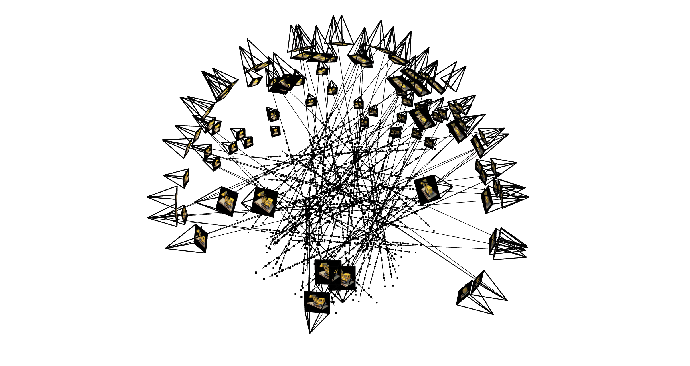
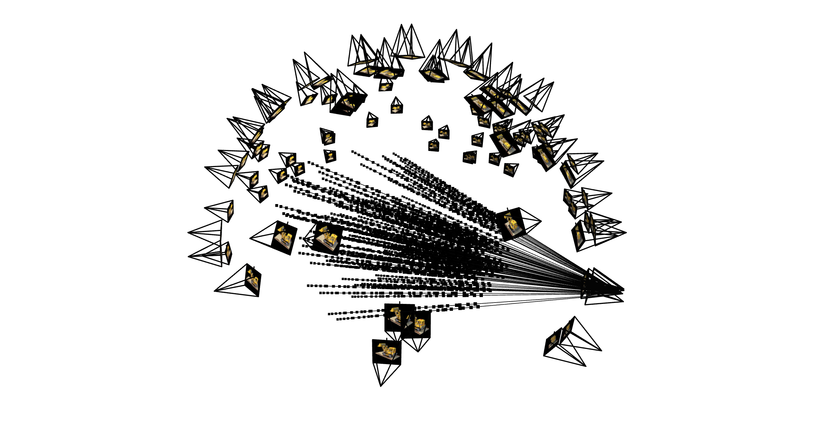
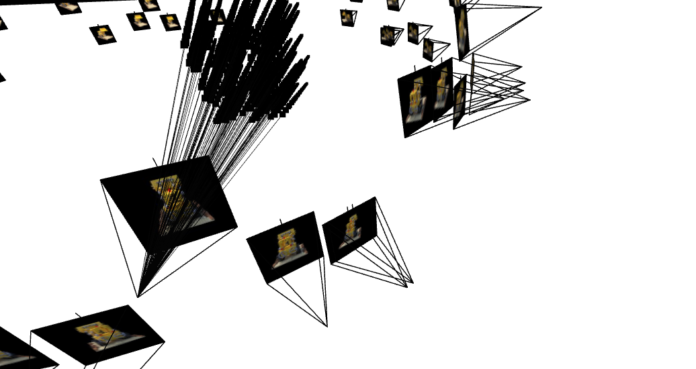
NeRF Architecture
- Input: 3D coordinates (x, y, z) + view direction (θ, φ)
- Positional Encoding: L=10 for coordinates, L=4 for view
- Hidden layers: 256 neurons each
- Output: density (ReLU) + RGB color (Sigmoid)
- Learning rate: 5e-4, Adam optimizer

Volume Rendering Implementation
Continuous Formulation:
\[ C(\mathbf{r}) = \int_{t_n}^{t_f} T(t)\, \sigma(\mathbf{r}(t))\, \mathbf{c}(\mathbf{r}(t), \mathbf{d})\, dt \quad \text{where} \quad T(t) = \exp\left(-\int_{t_n}^{t} \sigma(\mathbf{r}(s))\, ds\right) \]
Discrete Approximation:
\[ \hat{C}(\mathbf{r}) = \sum_{i=1}^{N} T_i \left(1 - \exp(-\sigma_i \delta_i)\right) \mathbf{c}_i \quad \text{where} \quad T_i = \exp\left(-\sum_{j=1}^{i-1} \sigma_j \delta_j\right) \]
alpha = 1 - torch.exp(-sigmas * step_size)
T = torch.cumprod(1 - alpha + 1e-10, dim=1)
T = torch.cat([torch.ones_like(transmittance[:, :1]), transmittance[:, :-1]], dim=1)
weights = T * alpha
rendered_rgb = torch.sum(weights * rgbs, dim=1)
return rendered_rgb
Lego Scene Training Progression
Rendered every 100 iteration on the validation set
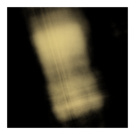
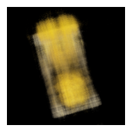
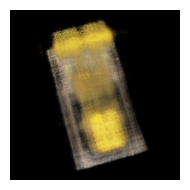
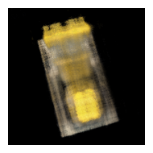
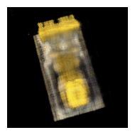
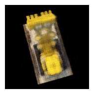
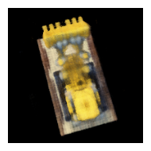
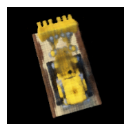
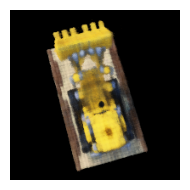
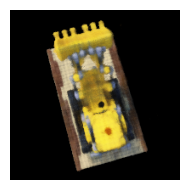
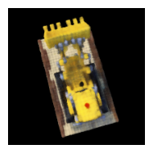
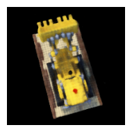
Lego Scene Validation Result After Training (2500 iteration)
per-image PSNRs:
[25.36, 26.33, 24.87,
24.72, 25.69, 26.75, 27.00, 25.68,
25.15, 25.53]
mean PSNR: 25.713 dB
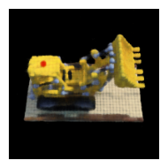
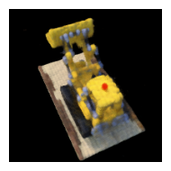
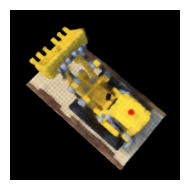
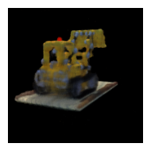
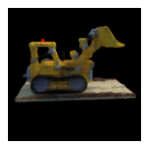
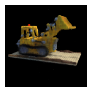
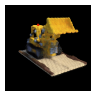
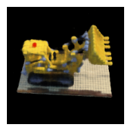
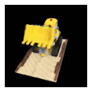
PSNR and Loss Curve
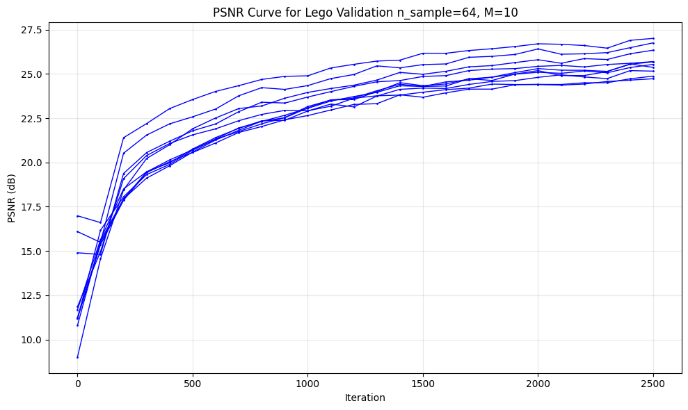
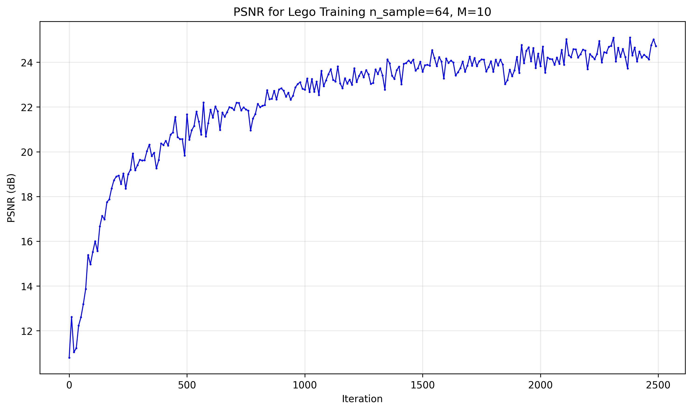
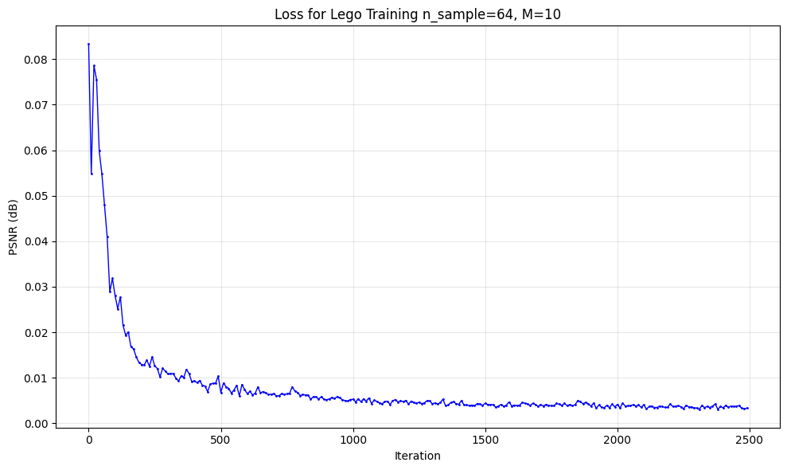
Ray Sampling Demonstration
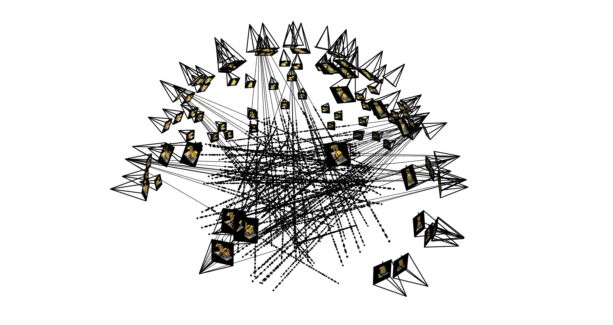
N = 100, M =10 (100 rays from 10 images)
Novel View Synthesis - Lego
(NeRF model: 2500 Iteration, 10k rays/batch, 256 width, n = 64, m = 10)
Part 2.6 Custom Object Training
Adapted NeRF for Labubu and Guillotine dataset with modified parameters:
- Near plane: 0.02
- Far plane: 0.5
- Samples per ray: 64
- Image resolution: height = 300 (resized from original)
- Camera Intrinsics:
K = [[304.263, 0.000, 195.170],
[0.000, 309.216, 138.674],
[0.000, 0.000, 1.000]]
- Distortion: [0.388, -2.688, -0.011, 0.003, 5.223]
- Reprojection error: 0.363 pixels
I choose to resize to 300 pixels since the at this scale, the fx and fy for camera Intrinsics are the most consitent (smallest difference), and also it has a relatively low reprojection error.
Custom Dataset Training Progression
Guillotine Training Progression
Guillotine Training Loss
Novel View Synthesis - Guillotine
(NeRF model: 5000 Iteration, 10k rays/batch, 256 width, n = 64, m = 10, lr = 5e-4)
The result is still somewhat blurry, which I suspect is due to the camera calculation in part 0.4. I tested my camera estimation implementation on the lafufu folder, and the visualization shows minor deviations from the provided npz dataset. This might explain why the novel view synthesis isn't as sharp as expected.